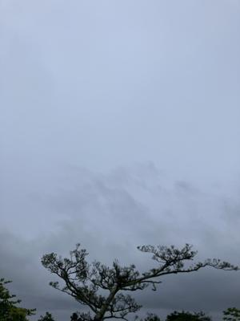
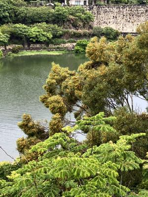
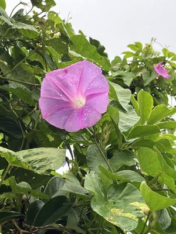

うるがいの話 ある日
最新: 母の日【うるがいの話 ある日】とは 一日だけのプログです
『うるがいの話』の最新一日だけのプログで、通信料が少なく経済的だ。カニの画像をクリックすると全ての日付が載る『うるがいの話』サイトを表示します
|
|
【うるがいの話】 うるがい(ｳﾙｶﾞｲ urugai)とは、『もずくがに』の名前でとても大きくなります。 |
|---|---|
|
|
【カミマヤーの話】 猫のことを方言でマヤーといいます。カミマヤー（kamimayaa）とは、神の猫のことです。 |
|
【たながぁの音楽】 たながぁ（ﾀﾅｶﾞｰ tanagaa）とは手長えびのことで、何種類かあり大きいのは車 エビぐらいになります。 |

|
【ぶながぁの話】 ぶながぁ(ﾌﾞﾅｶﾞｰ bunagaa)とは、赤い髪の毛、赤い身体、そして身長は１ｍ２０ｃｍ ぐらい、川の蟹を食べているの目撃された。場所は沖縄県国頭郡大宜味村のと ある村僕の隣近所に住んでいる爺さんから、聞いた話です。 |
|
|
【ギーマの話】 ギーマ(giima)とは、山原の里山に咲くスズランに似た、 花を付けます。実は食べられます、 気が付くと口の周りが紫になっています。 |
2026年05月10日 (日）母の日
15:23

今年もソウシジュ（相思樹）の黄色い花が、綺麗である。

琉球新報の記事より
これは明治３９（１９０６）年に動植物学の泰斗黒岩恒（ひさし
）の尽力で台湾から導入された。現地では軽便鉄道の枕木に利用
したのだが、沖縄への導入は緑肥のためだ。畑いじりの方はご存
じかと思うが、相思樹の落ち葉を畑にすくと、土壌が実にふっく
らとして絶妙な肥料になるのである。
フムフム、なるほど
誰かのプログより
ソウシジュ（相思樹）の花言葉は
「秘密の愛」
「相思相愛の夫婦愛の賛歌」のはずが、
「昼顔的な愛」のような花言葉になっているようで、
ちょっと違うような気がするのは、私だけでしょうか…。
フムフム、なるほど
ヨメは、コドモからカーネーションの花をもらっていた。我々の
母親たちは、この世にいない。
鳥が、窓ガラスにぶつかった。驚いた！、鳥は何事もなく飛び去
った。
動画作成のギターコードは、コードが正しいか実際に動作検証す
る。この前、フユウ（横着）して動画をアップした後に演奏した
ら、おかしなところが多々あった。この前、動画をみたら、こん
なのを見た。合成じゃないとしたら、本当に凄い。
ギターを弾く女の子の動画
久しぶりに弦を弾くと指先が痛い！！
梅雨空のリュウキュウ朝顔
